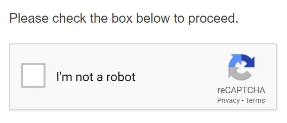
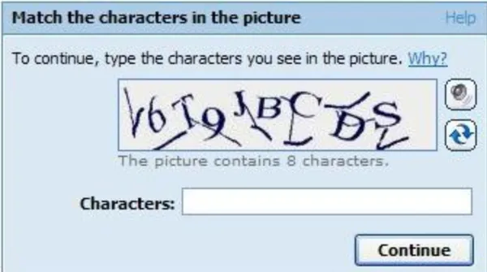
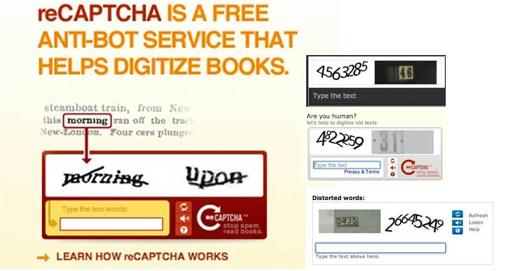
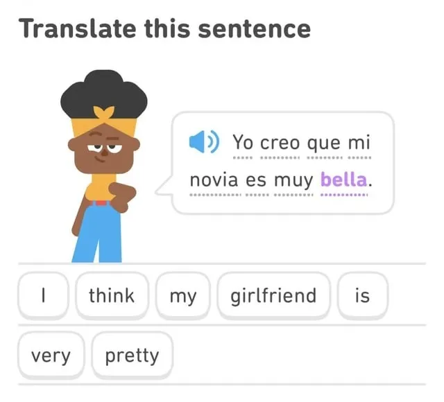

무료 언어학습어플 듀오링고
요즘은 부분 유료화 같은데 일단 기본적으론 무료
2011년에 나온 어플이 10년이상 무료를 유지할 수 있었던 이유가 있었음

나는 로봇이 아닙니다.
로그인할때 이런 인증 많이 해봤을 거임.

이런 프로그램을 reCAPTCHA라고 하는데 이 프로그램을 만든 사람이 듀오링고도 만든 것
이사람임
이름은 루이스 폰 안(Luis Von Ahn)
현 카네기멜런대 교수
루이스는 듀오링고 개발전에 이미 이 보안기술로 떼돈을 벌어서 듀오링고를 무료로 배포함
루이스 폰 안의 어머니는 과테말라 의사였음.
그래서 부유하게 자랐지만 주변에 넘쳐나는 극빈층을 보면서 평등한 현실을 꿈꿨음
루이스는 헬스장에서 사람들이 운동한 에너지로 전력을 산다면 모든 사람들이 공짜로
운동할 수 있다고 생각함
많은 사람들이 힘을 모으면 세상을 좀 더 나아지게 할 수 있다고 믿은거

실제로 루이스 폰 안이 만든 reCAPTCHA는 많은 사람들이 치는 단어로 신문이나
고서적 디지털화를 했음
뉴욕타임즈랑 구글, 아마존도 이를 이용해 신문, 문서를 이북화 함

놀랍게도 이런 시스템은 듀오링고에도 들어가있었음
듀오링고에서 사용되는 CNN이나 버즈피드 기사를
이용객들이 해석하다 보니 자연스럽게 번역에 참여하게 되는거
CNN, 버즈피드 : 개이득
버즈피드, CNN : 돈 드리겠습니다.
이렇게 언론사에서 돈을 받다보니 광고를 거의 하지 않는다고 함
으흐흑 듀오링고로 일본어 공부 시작했는데 그렇게 별로야?